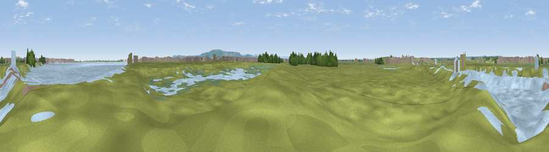

Viewpoint near Greatham
#40819 in England · top 93% of its area beats it · near Greatham · access?Where it is
The exact computed spot (NZ 51672 25475). Click the marker for map links.
Public access: no public right of way or access land is recorded at this exact spot — it may be on private land. Computed from Natural England's CRoW access layer and OpenStreetMap rights of way — not the legal definitive map. Always verify locally.
The view, rendered

A 360° render of this exact spot computed from the terrain model, tree cover and land cover — summer colours, afternoon light, calibrated against photographs of famous viewpoints. Real trees, hedges and buildings will differ in detail.
The panorama
Grey silhouette: terrain skyline in each direction (720 bearings, Earth curvature and refraction included). Dashed green: skyline with trees (+15 m) and buildings (+8 m) as obstacles. Blue strip: how far the ground is visible on each bearing.
Where the view opens
Wedge length = distance to the farthest visible ground on that bearing (vegetation-aware). Rings at 10, 25 and 50 km.
What fills the view
47% grassland · 40% water · 5% woodland · 3% cropland · 3% wetland · 2% built-up
Angular shares of the visible panorama (visual magnitude), not map area. Landscape diversity 0.51 (0–1 Shannon).
Key numbers
More beautiful places nearby
The staircase of upgrades: each row has a higher view potential than everything closer. Driving times are estimates from straight-line distance, calibrated against real road routing — check an actual route before setting out.
| Place | Direction | Drive | Score |
|---|---|---|---|
| Viewpoint near Cowpen Bewley | WSW · 1 km | ~3 min | 28.6 |
| Viewpoint near Seaton Carew | N · 3 km | ~6 min | 59.1 |
| Viewpoint near Port Clarence | S · 3 km | ~7 min | 62.4 |
| Viewpoint near Lazenby | SE · 9 km | ~17 min | 86.4 |
| Warsett Hill | ESE · 18 km | ~31 min | 86.8 |
| Viewpoint near Easington | ESE · 23 km | ~38 min | 90.2 |
| The Knoll | SSW · 448 km | ~419 min | 91.0 |
54.62178, -1.20126 · source: osm viewpoint · position refined by local search. Computed location — check access rights before visiting.